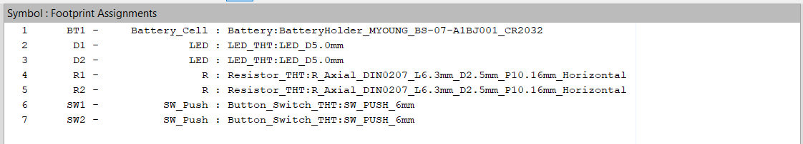

Final Project
First Circuit
The aim of this project was to familiarize ourselves with the theory, design software, and production of circuits. We used KiCad on our school computers to create the PCB's as a free alternative to other industry standard circuit designers.
After the download finished, I opened KiCad and began to familiarize myself with the software. While I liked the compartmentalization in its opening a new window for each part, it ended up being pretty cluttered by the end. For the first half of this project, we were tasked with creating a simple circuit that would power an LED with a battery.
I started off by creating a new project and placing a resistor, battery cell, and LED in the schematic editor, and connected the three of them in the right orientation with wire.
I then looked up which parts we would be using for our future circuits and assigned them to the part footprints in the footprint editor. This took a while due to the amount of footprints we had to go through to find the right one, so I wrote them down in case for future projects.
Finally, I put the circuit together in the PCB editor, connecting wire between the three parts and orienting them as desired. This part was where I struggled most in terms of navigating menus, showing in the 5 minutes it took me to find out how to add wiring. However, in the end, I had a completed circuit, having gained expereince with circuit design software UI for later use.
Second Circuit
After finishing the functional LED circuit, we were assigned a group circuit with at least two LED's with their own buttons. Since it was the first time any of us used buttons in making electronics, we were taught how they worked before starting. We created a new project and got to work on a new schematic, attaching two buttons before their respective resistor and LED.
Like before, we assigned footprints from the parts we had, now accounting for the new buttons.

We arranged the two lights to surround the power source this time, making sure to leave space on the outside of the circuit to avoid cutting the circuit.

This time, I found a new utility for KiCad, a 3D PCB viewer after configuring the circuit in the PCB editor, which helped us see the final product.